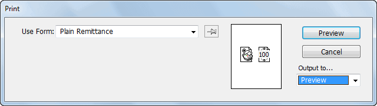

The value you specified on “Your Reference” will always appear on the payee’s bank statement. In addition, MoneyWorks will attempt to transfer meaningful information (such as the transaction description), but this is bank specific.
The transfer file will not be created if MoneyWorks detects any errors (you will be notified of these at the time). Errors include:
Missing Supplier code or bank account (as described above);
Attempt to transfer a transaction that is not a Payment;
Attempt to transfer payments from more than one MoneyWorks bank account. All the transactions in the transfer must have the same MoneyWorks bank account (this is displayed in the Bank column of the Transaction list window).
Attempt to transfer an unposted transaction. Only posted transactions can be transferred.
If MoneyWorks detects an error, it will not create the payments file. You need to correct the error and remake the batch. Do not use the Batch Creditor Payments command to do this—instead highlight the transactions (in the payments list) and choose Electronic Payments from the Command menu— see Manual Electronic Payments.
If you need to reprint a remittance advice (or even a cheque, although you will have to be careful with the cheque numbers), you can do it as follows:
The payment must be a payment against invoices.
The Print Remittance window will open

If printing a cheque, you will need to load the printer with your cheque stationery.
1 Note that imported payments will not respect an invoice that is on hold.↩︎
2 To print a cheque you will need to have a special form designed that matches your cheque stationery. You will need to have the cheque stationery in the printer, and you should ensure that the number on the cheque matches the number you have allocated in the transaction.↩︎
3 MoneyWorks cannot support every bank format. However in MoneyWorks Gold it is possible to write a custom report and use that instead (you will need to get the format specifications from your bank). Further, if you call the report “x.Bank.bankname.crep”, and place it in your Custom Scripts folder, it will appear as a bank Format option in the Electronic Payments command. Here “x” is the country Locale (normally the first character of your serial number), and bankname is the name of the bank; e.g. “C.Bank.TD Bank.crep” for the TD bank in Canada).↩︎
Using MoneyWorks Services, it is possible to automate the entry of supplier invoices and/or customer purchase orders. In essence, the transaction will "just appear" in MoneyWorks without any data entry on your side. Obviously this is a great time (and hence money) saver.
A separate Purchase Order Matching service is available to determine differences in the supplier invoice and the originating order, as well as managing the received quantities on the order.
Two forms or automation are available:
eInvoicing: In supported jurisdictions only (sorry North America!) eInvoicing allows you to send an invoice based on the PEPPOL standard. An eInvoice will "just appear" in your customer's accounting system, even if they are not savvy enough to be using MoneyWorks, provided they have also signed for e-invoicing.
PDF Scanning: Here a pdf of a supplier invoice, or customer purchase order, is forwarded to a special email address, the PDF deconstructed into its component parts (date, quantities, prices etc) and these are retrieved into MoneyWorks at the click of a button.
eInvoicing is a mechanism for sending and receiving invoices electronically, based on the PEPPOL standard. There is no need to send a paper copy or pdf (although the latter is an option with eInvoicing). Instead the invoice is transmitted as electronic data and will just appear in the recipient's accounting system with no need to manual re-entry. This streamlines both the receivables and payables processed, plus saving a lot of data entry work. MoneyWorks users in Singapore can also send purchase orders as "eInvoices".
The service is run by a network of service providers ("Access Points"), and MoneyWorks has teamed up exclusively with Link4 to provide this service in Australia, New Zealand, Singapore and the United Kingdom. To use the service, for which there is a small charge, you will need to have a Link4 account (see below).
The destination of an eInvoice is determined by a unique number given to each organisation by a central national authority (for example, in Australia it is the ABN number). When you register with Link4 to use them as your service provider, they notify the central registry. Hence when an eInvoice is sent to you (as identified by your ABN), regardless of the sender, it will be routed to Link4, and then to you.
eInvoicing is provided as a MoneyWorks Service for MoneyWorks Express, Gold and Datacentre. This means it has to be enabled before you can use it. To enable the service:
The services window will open, listing all currently available services.
Click on the More about eInvoicing link of the eInvoicing Service, then the
Enable link
The service will be enabled the next time you open this document. You can disable the service by clicking the disable link.
If you already have an eInvoice account with Link4 you can skip this step.
Before you can create an account you will need to know your eInvoice ID and have proof of identity of your company (KYC in Singapore). The proof required varies from country to country, and will be needed when you create your account. The eInvoice ID required is:
Australia: ABN Number
New Zealand: NZBN Number
Singapore: UEN
UK: Vat Number
To create an account, you can click the Create Link4 Account link in the final step of the enabling process, or (once you have restarted MoneyWorks):
Choose Command>eInvoice Login ... in MoneyWorks
The link4 account login window will be displayed.
2. Click Create an Account (you do not need to enter a user and password).
You will be taken through the sign up process, the first step of which is to select your country:
3. Enter the details requested on the Sign Up and following pages
This includes the proof of company documents (you will need to have a pdf of the appropriate documentation).
Once you complete the process, the account will be established. However you will not be able to use it until your company details are verified with the government agencies concerned (this might take a day or two, and you will be advised by email). In the meantime you need to set up your MoneyWorks eInvoice settings.
Logging into eInvoicing
Once you have created an account, you can log into the eInvoicing service.
1. Choose Command>eInvoice Login ..., enter your user and password and click the Sign In button.
The first time you do this you may need to click the Authorise link to allow MoneyWorks access.
You login is automatically renewed, and you shouldn't need to login again in the normal course of events.
eInvoice Settings
Before you use eInvoicing, you need to set up the eInvoicing settings and defaults in MoneyWorks.
1. Choose Command>eInvoice Settings
The MoneyWorks eInvoice Settings window will be displayed.
Click OK to save the change.
Uploading your customer and supplier information
To facilitate eInvoicing, you need to upload a list of customers/suppliers. Link4 will only permit eInvoices to be received from your specified suppliers. This is to reduce the possibility of being sent fraudulent invoices.
To upload your customer/supplier information:
Highlight the customer/supplier in the Names list
Click the Update Link4 toolbar button
The highlighted suppliers and/or customers will be uploaded. They must have an eInvoicing ID and an email address.
To review what customers/suppliers are in Link4 click the Show Uploaded Suppliers or Show Uploaded Customers button in the Retrieve Invoices screen. The information is downloaded into a text file which is automatically opened.
This will be your ABN, NZBN, UEN or VAT Number, depending on country. Note that this must be same as the one entered in the eInvoice Sign Up page
Invoices received will be assumed to be in this currency
If MoneyWorks cannot identify the supplier or item on a supplier invoice, it will substitute these (you will need to check and correct the invoice).
Leave this at None if you do not wish to include a pdf.
MoneyWorks will assign those codes to the lines but will not change the GST amount on the imported invoice.
Leave the Support settings untouched unless requested by MoneyWorks support.
You cannot send eInvoices to you customers unless they are also registered for eInvoicing and you know their ABN/NZBN/UEN/VAT number. Similarly you can only receive invoices from suppliers who are registered and know your number.
These numbers numbers need to be stored in MoneyWorks against each participating customer/supplier.
Enter the number in the eInvoicing ID field on the Bank and EDI tab
Sending an eInvoice
To send an eInvoice:
Enter and post the invoice in the normal manner
Only posted invoices can be sent as an eInvoice
Highlight the invoice(s) in the transaction list and click the eInvoice
toolbar button
When asked for confirmation, click OK
When the process is complete, which might take a few seconds, a confirmation alert will be displayed. If there are any errors in the process an error message will be given (for example, you cannot upload the same invoice number more than once).
When Link4 receives the invoice, they determine who it is for (by the ABN/ NZBN/UEN/VAT number of the customer), determine who the customer's access point is from a national registry, and forward the eInvoice to them. They in turn will send the invoice direct into the customer's accounting system. The reverse happens when a supplier sends you an eInvoice.
Retrieving eInvoices
eInvoices will be held at Link4 until they are retrieved. To retrieve the invoices:
Choose Command>Retrieve eInvoices
The Retrieve eInvoice window will be displayed.
By default, this shows any invoices that have not been retrieved
Highlight the invoices you want to retrieve, and click Import
Press Ctrl/Cmd-A to highlight all invoices in the list. Use Ctrl-click (Windows) or Cmd-click (Mac) to high selected records only.
The invoices will be imported, and the Retrieve window will close leaving the newly imported displayed in the transaction list. They are not posted, allowing you to edit the product codes and supply other details (but be careful not change the price).
The invoice is coded as follows (the defaults are specified in the eInvoicing Settings):
If the supplier cannot be identified, the default supplier will be used;
If the item code on the invoice is not one that we purchase, the product table will be checked to see if it is a suppliercode (from the identified supplier), and if so the corresponding item code inserted, otherwise the default item code will be used;
If the default item code is used and the identified supplier has at least one autocode GL account, it will use the first of these as the target GL account (changing the item code subsequently in the transaction will overwrite this);
If there is any GST/VAT on the invoice, the transaction will use the default tax code, otherwise the default zero-tax code will be used. The GST/VAT value will not be altered from that in the eInvoice.
If a pdf has been included in the eInvoice by the supplier, it will be attached to the transaction (click on the Image icon at the top right of the transaction window to view the pdf).
In certain circumstances you may need to re-import an invoice. To see recently downloaded invoices:
Click on the Downloaded Inwards tab
The available invoices will be displayed. These are ones that have been marked as already downloaded.
The highlighted invoices will be downloaded as Supplier Invoices in MoneyWorks.
Note that this may result in duplication of supplier invoices. MoneyWorks assumes you know what you are doing.
You can use this screen to view eInvoices that you have sent but which have not been retrieved by your customers.
Click on the Unretrieved Outwards tab
The list of unretrieved invoices will be displayed.
Double-click an item in the list to view the original MoneyWorks invoice.
When you receive an eInvoice, you have the option to send a response. The response settings are on the right hand side of a received eInvoice transaction. Having entered the appropriate response, clicking OK on the transaction entry window will transmit the response back to the sender.
The invoice response area on the
transaction window is also visible for transactions that you have sent. The latest response sent by the recipient will be displayed when the Update button is clicked (it is not displayed automatically on opening as there is a small delay in retrieving the response).
Link4 also provide a comprehensive dashboard which allows you to manage your eInvoicing. Using the dashboard you can monitor the status of your customers, invite them to use eInvoicing, view unretrieved invoices and more.
The dashboard can be accessed through Command>eInvoice Login in MoneyWorks, or directly in your browser going to https://secure.link4.cloud/lg.
Invoice/Order scanning allows the direct entry of PDF supplier invoices and/or customer purchase orders directly into MoneyWorks with no rekeying.
Instead PDFs of the invoices/orders are emailed to a designated email address, and each PDF is dissected into its key components and made available to your MoneyWorks file. The service works with MoneyWorks Express (for invoices only), Gold and Datacentre.
Note: The PDF must be an original one received from the supplier/customer. You cannot use a PDF that you have created by scanning a paper invoice.
This facility is available as a MoneyWorks Service in MoneyWorks Express, Gold and Datacentre. Before you can use it you need to enable it:
Choose File>Manage Services
The services window will open, listing all currently available services.
If necessary register your document
Click on the More about Invoice/Order Automation link of the Invoice/ Order Automation Service, then the Enable link
The service will be enabled the next time you open this document. You can disable the service by clicking the disable link.
The service is provided by Ferret Software, who will be notified when you enable the service.They will contact you separately about getting started with the service (there is a small charge involved per invoice).
Setting up
Having enabled the service, and received your account information from Ferret, you need to set the parameters in MoneyWorks. To do this:
Choose Command>Ferret Settings in MoneyWorks
The Ferret settings window will be displayed. This is only present if you have enabled the service for your document and restarted MoneyWorks.
2. Specify the Login details provided by Ferret
There are two sections for this, one for receiving supplier invoices and one for customer purchase orders. Only fill in the section(s) that you have subscribed to.
Inv User and Inv Password: These are the credentials for your supplier invoicing account provided by Ferret
Supplier: A default supplier code to use if the supplier cannot be identified from the invoice.
PO User and PO Password: These are the credentials for your customer purchase orders account provided by Ferret
Customer: A default customer code to use if the customer cannot be identified from the purchase order.
Check Barcodes: For purchase orders only, set this if any of the suppliers use a product barcode (instead of a SKU) on the order. If an item code on the order can't be found a search will be done for the barcode.
Default Account: The default GL Code to use for "By account" invoices. MoneyWorks will use this if the identified supplier does not have a default account set in their Autocode (otherwise it will use the first autocode
default account).
Default Item: The default item code to use where MoneyWorks cannot identify the sku/barcode on the invoice or purchase order.
Submitting your Customer and/or Supplier details
You will need to let Ferret know which suppliers and/or customers you wish them to handle. This is required so they can match the supplier/customer to the code used in MoneyWorks. To do this:
1. In the names list, highlight the suppliers (or customers) that you want them to process and click the "Update Ferret" toolbar button.
MoneyWorks will upload the code and name of the highlighted records.
If you add more suppliers or customers, you will need to upload them as well. It doesn't matter if you upload the details more than once.
Note: If you change a customer/supplier code, or they change their name, you need to re-upload the customer/supplier record.
Submitting Samples
Ferret require sample PDFs for each supplier/customer. This is so they can set up the scanning rules for that particular layout. They will ask you to forward sample from each supplier/customer (these will be ones that you have received previously).
The sample invoice is "dissected" into its component parts, providing a template for future invoices received from the same supplier.
Retrieving Transactions
To retrieve new invoices/purchaser orders:
1. Click the Get Ferret toolbar icon in the transaction list.
MoneyWorks will check with Ferret to see if there are any new transactions and if so download them and display them in the transaction list. The original PDF will be attached to the transaction to allow easy checking and verification.
Purchase Order Matching
The receipt of an electronic invoice, either through eInvoicing, PDF scanning, or any other form of importing, bypasses the standard MoneyWorks process for receipting of goods through a purchase order. If you receive the invoice electronically and separately process the purchase order, you risk double entering the invoice.
The Purchase Order Matching Service offers a way to not only manage the order from an imported invoice, but also to highlight any discrepancies in items, prices and quantities ordered and invoiced.
When an (unposted) supplier invoice is opened, and if there is an outstanding purchase order to the supplier with the same order number, a Match to PO button is installed on the purchase invoice. Clicking this will display differences between the order lines and the invoice lines.
As an example, this is the original purchase order:
The eInvoice came in as follows:
Clicking the Match to PO button in the invoice opens a window showing the differences between the order and the invoice (if there are no differences the window is not opened). In the example above, the following is displayed:
BB100 shows that we received 5 items only when we ordered 10
BC100 shows that, although we were invoiced for the quantity ordered, the unti price is different.
CA200 shows that we received 1 item, which is 1 more than we ordered (the Overship quantity)
The items below the ** Missing line are outstanding items that we ordered, but not received (in this case one CB100—perhaps CA200 has been erroneously shipped or invoiced instead).
Note that the order line for BA100 agrees with the invoice for quantity and price, and hence BA100 is not shown in the PO Match window (only differences are listed).
Note: The order quantity shown is the outstanding quantity (i.e. if the order has been part receipted, just the backordered quantity, and not the original order quantity).
Clicking Cancel will close the PO Matching window. You can then decide what to do with the invoice.